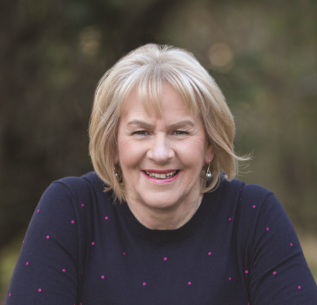
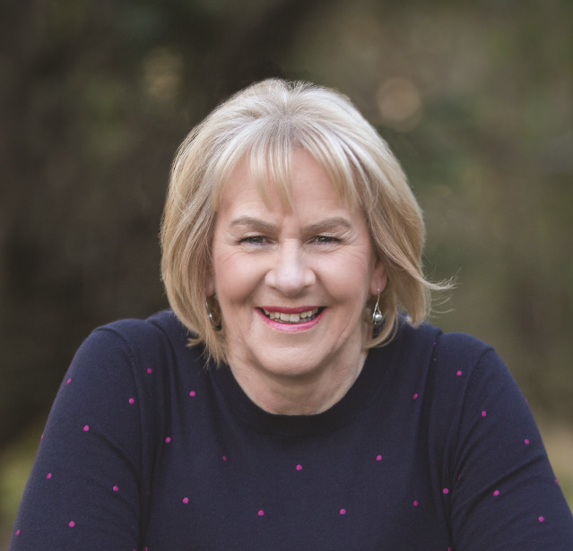

Heather Morris (author)
Heather Morris (born 1953) is a New Zealand author who lives in Australia. Her 2018 debut novel was The Tattooist of Auschwitz.
Heather Morris (born 1953) is a New Zealand author who lives in Australia. Her 2018 debut novel was The Tattooist of Auschwitz.
Heather Morris was born in 1953 in Te Awamutu in the North Island of New Zealand.[1] She later moved with her family to the town of Pirongia, and graduated from Te Awamutu High School. In interviews, she stated that as a child she knew nothing about the Holocaust.
In 1971, she moved to Melbourne; there she met and married Steve Morris in 1973. In 1975, she returned to New Zealand with her husband and settled in Christchurch. Their first son was born in 1976, their second son in 1980, and their daughter in 1985.